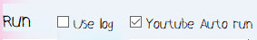

 왼쪽 Use log 버튼은 log에 표시되는 컨텐츠를 properties파일 안의 logs.ini 파일 안에 저장함
오른쪽 Youtube Auto run 버튼은 유튜브 자동 재생을 활성화함
만약 온라인클래스 유튜브 강의에 들어갔을 때 영상을 한 번 이상 재생 했음에도 영상이 자동으로 시작되지 않는다면 체크 해제해야함
위 영상에서는 유튜브 영상이 자동으로 재생되지 않으니 autorun 기능을 체크 해제해야 함
※참고로 자동재생 여부는 매번 바뀔 수 있으니 확인해줘야 함 (상황에 따른 자동재생 여부는 현재 확인 중)※